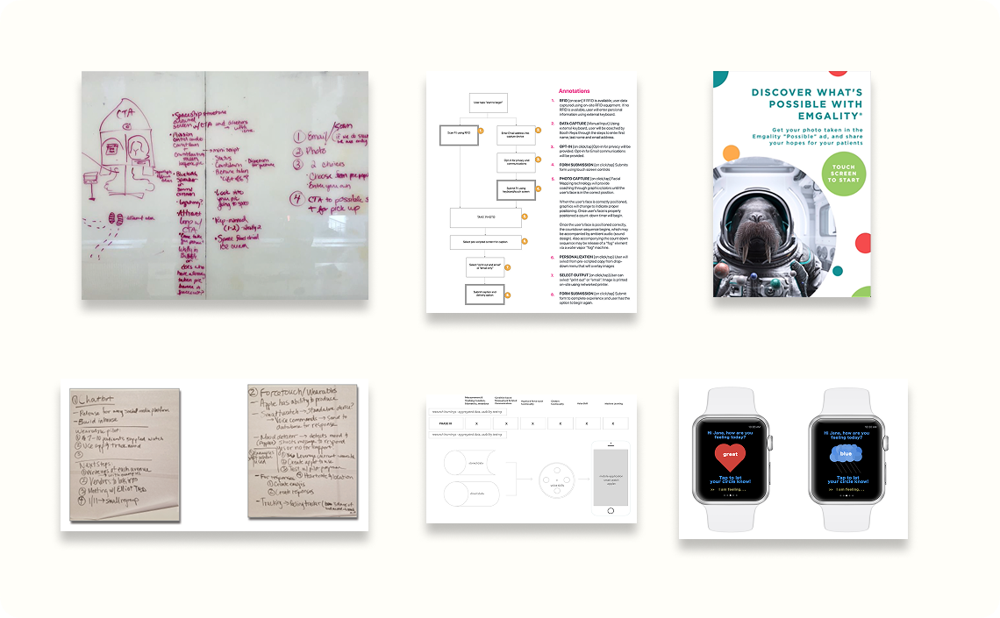
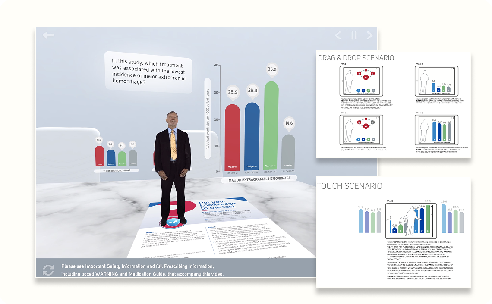
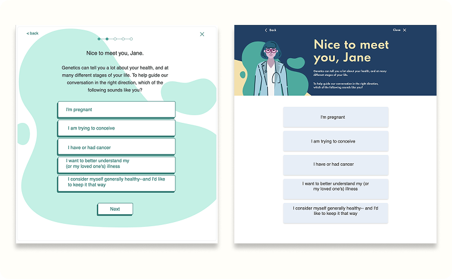

UX Process & Methodology
Discovery, wireframing, prototyping, qual/quant research, workshops and UI design collaboration
I'm a User Experience professional with 10+ years executing products that solve problems efficiently. I apply mobile-first principles and industry best practices across content strategy, information architecture, user research, and interaction design.
I've led interdisciplinary teams as both technical and UX lead, conducting heuristic evaluations and usability testing to validate designs. I deliver measurable impact through API integrations, AI, XR, and data-driven strategies, always with a team-first mindset.

Discovery, wireframing, prototyping, qual/quant research, workshops and UI design collaboration

LIDAR-based audio visualization translating spatial data into sound for navigation, including interface controls, training materials, and documentation

Insulin dosing interface for healthcare professionals managing glycemic control

Augmented Reality experience for pharmaceutical sales presentations

Consumer-facing genetic testing portal quiz experience and optimized registration flow.
Figma sync tool image
Automated workflow syncing design tokens from Figma to code, keeping design and development in alignment.